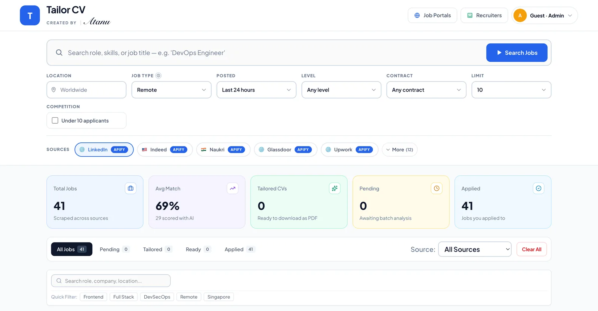
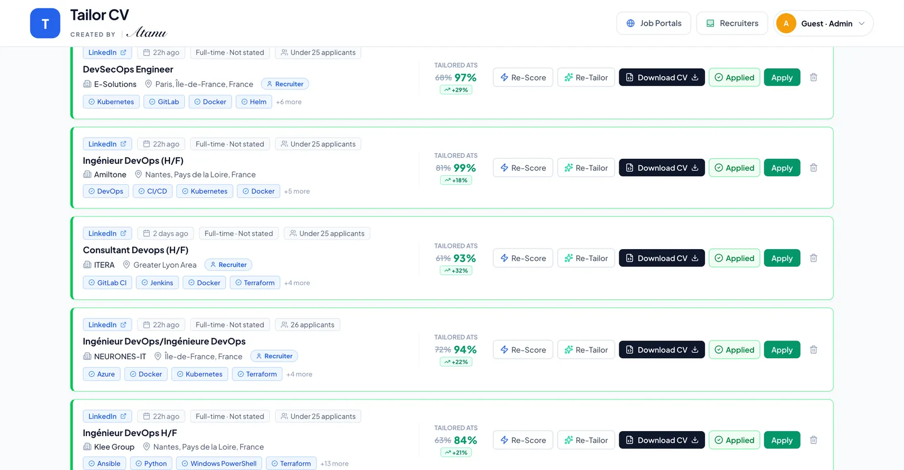
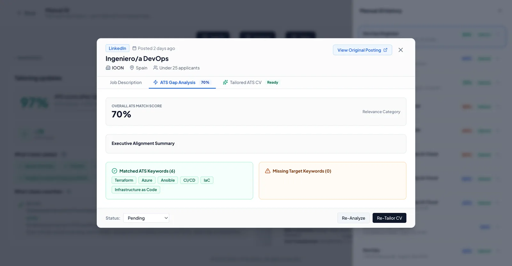
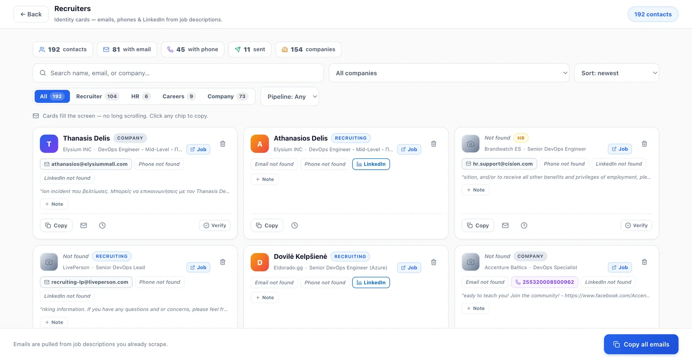
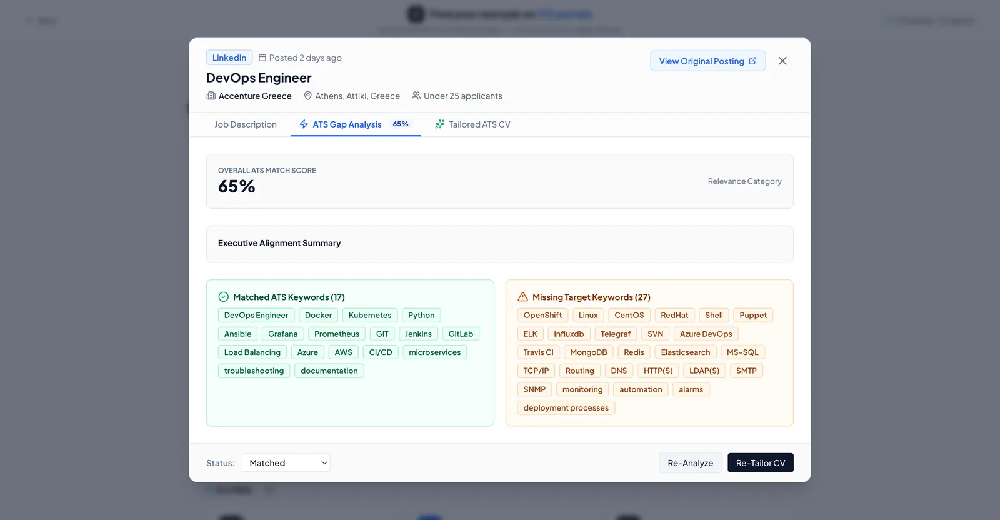
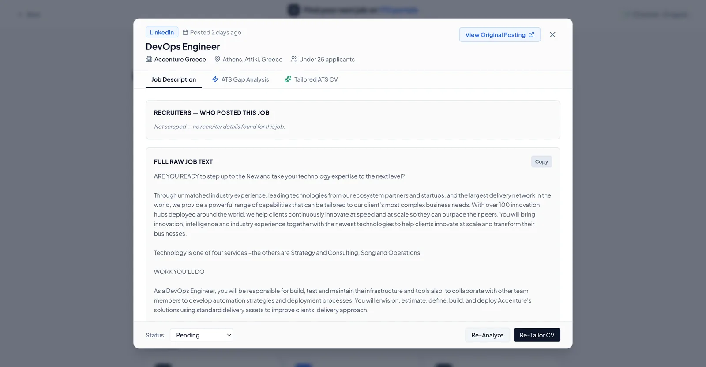
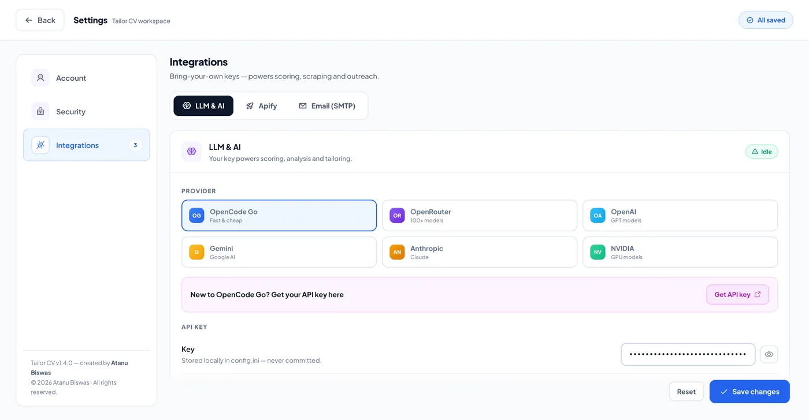
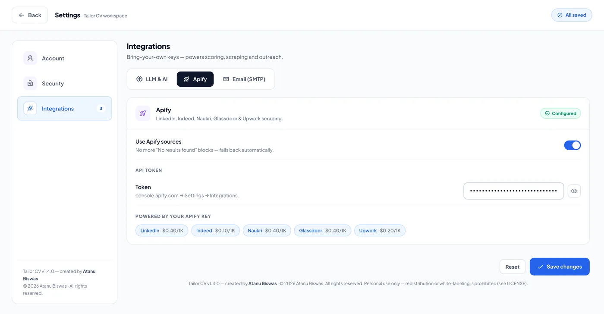
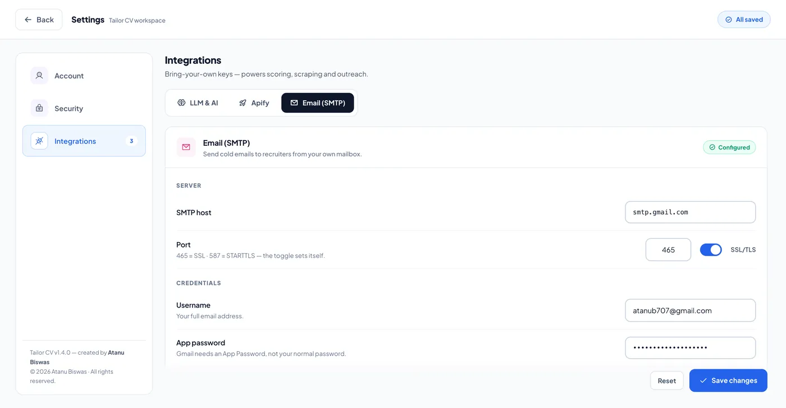

Your CV is being filtered out.
Stop sending the same one.
Tailor CV finds jobs from 17 sources, scores them against your real CV with AI, and rewrites every application to match — so your profile gets past the bots and in front of humans.
Self-hosted · Docker in one command · No subscription

The problem
Most applications never reach a human.
Recruiters use applicant-tracking systems that scan for keywords before anyone reads a word. If your CV doesn't match the posting, it's filtered out — no matter how good you are.
Generic CVs get rejected
A one-size-fits-all CV loses to tailored ones on 8 out of 10 keyword checks.
Tailor CV scores your CV against the exact job — and shows you what to fix.
Rewriting takes hours
Manually adapting your CV for every role is why most people give up applying.
One click rewrites your CV for that job — from your real experience, not templates.
Your data lives in the cloud
Online CV tools store your personal details, salary, and contacts on their servers.
Tailor CV runs on your machine. Your CV and keys never leave it.
Product tour
Built for the way job hunting actually works.
Score every job before you apply
Every listing shows a real ATS match — not a guess. See your skill gaps, the missing keywords, and what to fix, all before you send anything.
- Applicant counts & competition filters
- Batch score & tailor — 3 at a time, no freeze

One CV that becomes every CV
The Master CV editor gives you a live A4 preview as you type — import a PDF or DOCX, then tailor it to each role in one click.
- Import PDF / DOCX / TXT
- AI compress with live market keywords

Paste any job. Get answers instantly.
No scraping needed — drop in any job description, get scored on the spot, and generate a tailored CV for it.
- Full history — restore any past analysis
- ⌘J from anywhere
Reach the recruiter — with an email that sounds like you
Recruiter contacts are pulled from the jobs you scrape. The AI writes a cold email from your real career journey — jobs, companies, projects — and it goes out from your own mailbox.
- Follow-ups, notes & email history
- Availability & work-mode fit woven in

Tell the AI your preferences once
Work mode, preferred locations, notice period, salary expectations, sponsorship needs — kept in your account, used by the AI, never on your CV.
- All ISO currencies & 180+ languages
- Compensation stays private — never emailed

Browse 190+ job portals worldwide
Beyond the 17 built-in sources, a full directory of 190+ job boards — organized by region and category — so you never miss where your industry posts.
- 13 categories with country flags
- Direct links to every board

Bring your own key
Your keys. Your device. Your choice.
Add the keys you already have — for AI, job sources, and email. Every key stays in a local config on your machine. Nothing is uploaded, tracked, or stored anywhere else.

AI & LLM
Gemini, OpenAI, Anthropic, OpenRouter, NVIDIA, or OpenCode Go — one key for scoring, tailoring, and writing.

Job sources
One Apify token unlocks LinkedIn, Indeed, Naukri, Glassdoor, and Upwork scraping.

Email (SMTP)
Connect your own mailbox — Gmail, Outlook, or any SMTP — so cold emails go out from your address.
What you get
Everything between you and the right job.
Find every job
17 sources and 190+ portals — filtered by location, type, and competition, including "Under 10 applicants".
Know your real match
AI ATS scoring with skill gaps, missing keywords, and step-by-step fixes — before you apply.
Tailor in one click
An ATS-optimized CV for every role, written from your real experience and the job's own keywords.
Paste any job, get answers
Manual JD analysis — paste a description, get scored instantly, and generate a tailored CV. No scraping needed.
Reach the recruiter
Recruiter contacts from job posts, AI-written cold emails from your real journey — sent from your own mailbox.
Yours, end to end
Local accounts, your own AI keys, local storage. No subscription, no cloud, no data harvesting.
How it works
Three steps. That's it.
Add your CV
Import your PDF, DOCX, or TXT — or build it in the editor with a live A4 preview as you type.
Search & score
Jobs from 17 sources land on your dashboard. AI tells you your match — and exactly what's missing.
Tailor & apply
One click per job. Download the ATS-ready PDF — or let the AI write the recruiter's email too.
Privacy first
Your job search is nobody else's business.
Runs on your machine
Self-hosted with Docker or Node. Your CV, jobs, and history live in a local database — not on a server you don't control.
Bring your own AI key
Works with Gemini, OpenAI, Anthropic, OpenRouter, NVIDIA, or OpenCode Go. Your key, your billing, your choice.
No accounts in the cloud
Local accounts with fully isolated data per person. Nothing is uploaded, tracked, or sold — ever.
FAQ
Questions, answered.
No. Install with a single Docker command (or one setup script), open the browser, and you're in. Your AI key goes in Settings.
Gemini, OpenAI, Anthropic, OpenRouter, NVIDIA, and OpenCode Go. Pick one in Settings — your key is stored locally and never shared.
The app is free and open source (MIT). You only pay whatever your chosen AI provider charges for API usage — most have free tiers.
Yes. Every person gets a local account with fully isolated CVs, jobs, scores, and history — on the same machine.
Yes. It ships with a 1,000+ job-title taxonomy across every industry, plus 190+ job portals worldwide — from Singapore to Brazil to Japan.
Nothing happens — it stays in your local database. Delete that file and it's gone, permanently. That's the point.
Download
Run it on your machine.
Self-hosted, open source, and yours. Native installers are on the way — or start today with the one-line Docker setup.
Installers are being built by our release pipeline — the Docker one-liner and setup script work today. Watch the GitHub Releases page.
Stop sending the same CV.
Set up Tailor CV in minutes, on your own machine, with your own key. Free and open source.
Free & open source · MIT license · Docker · Windows / macOS / Linux